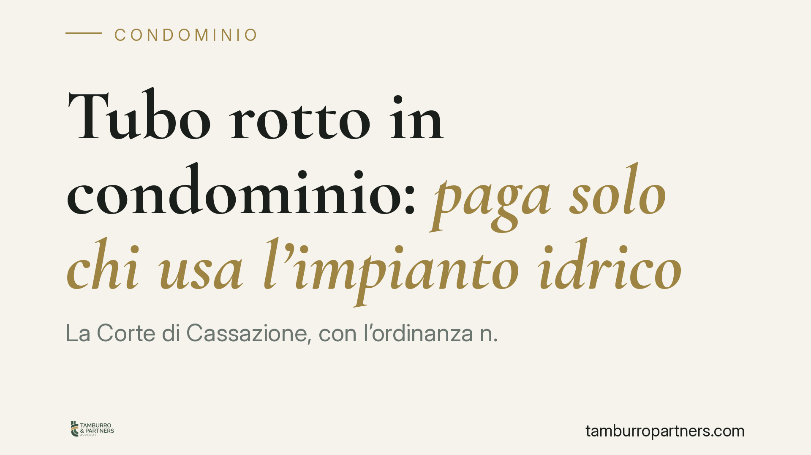
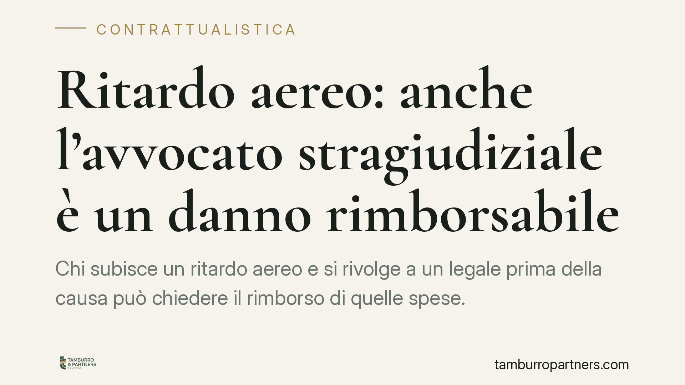
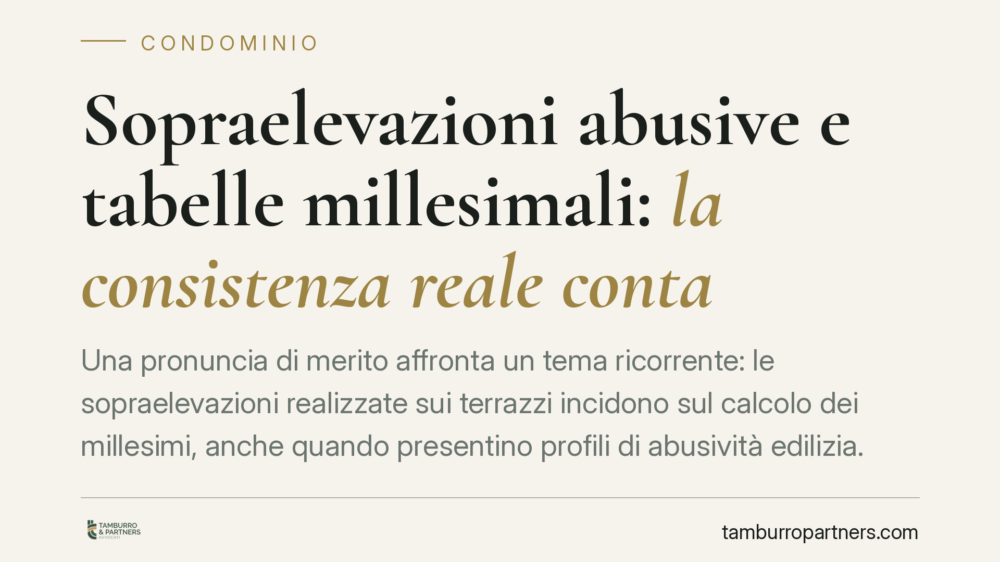
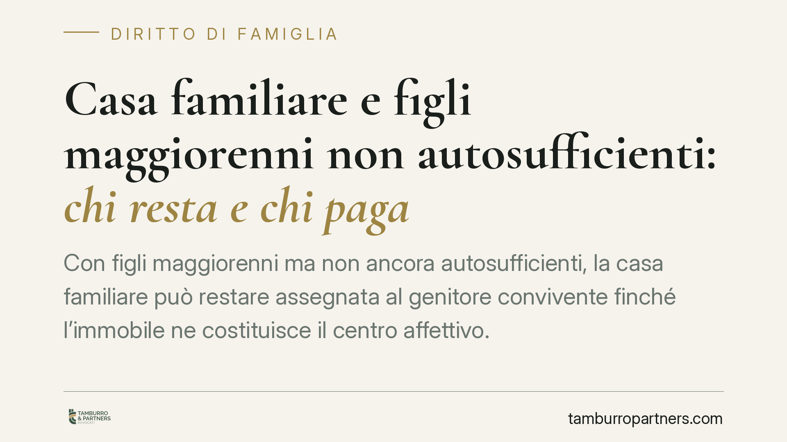
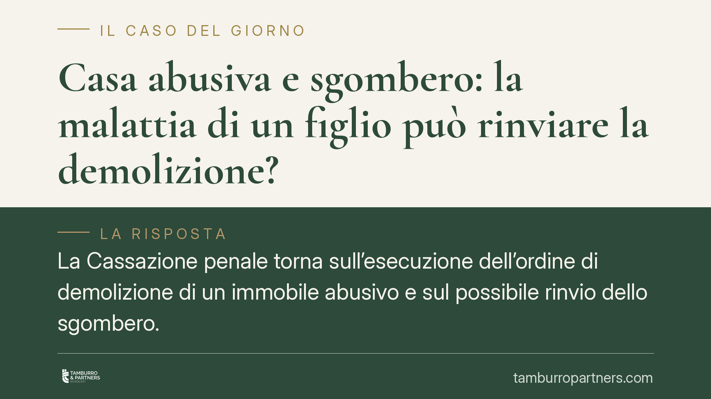
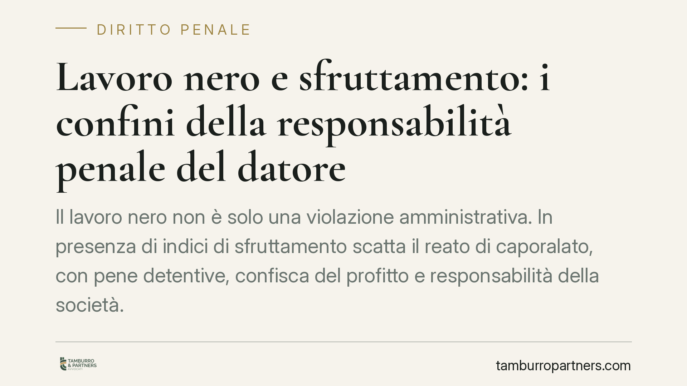
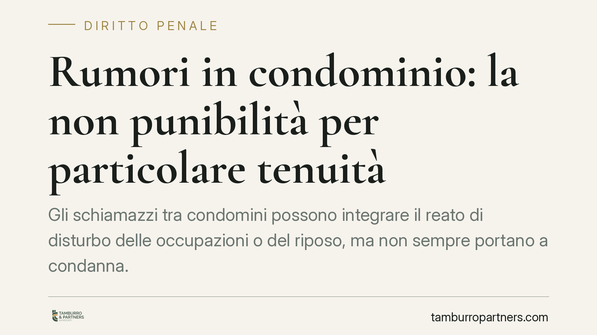
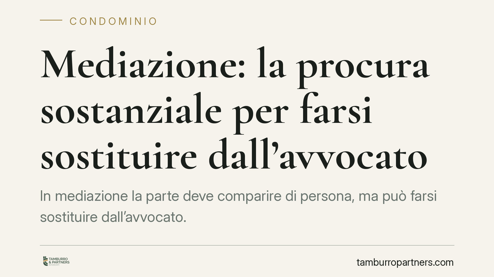
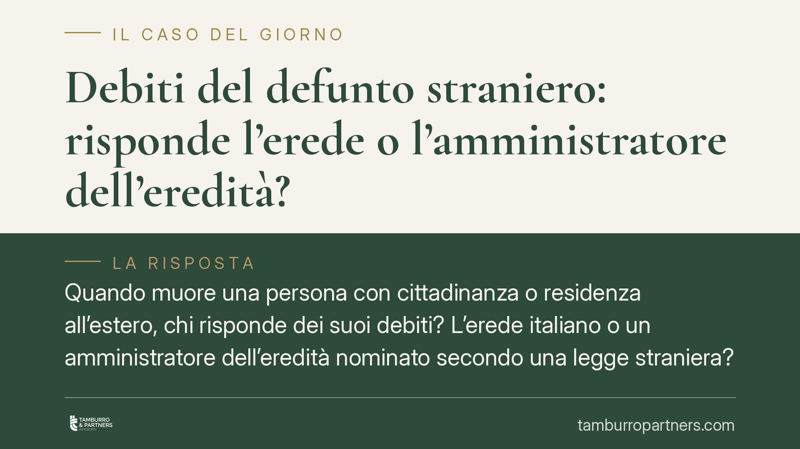

Tubo rotto in condominio: paga solo chi usa l'impianto idrico
La Corte di Cassazione, con l'ordinanza n. 20112/2022, torna sul tema del condominio parziale: quando una tubazione serve solo una porzione dell'edificio, le spese di riparazione g…

Reati tributari e responsabilità 231: le nuove vie di esclusione per gli enti
Un disegno di legge di riforma della responsabilità amministrativa degli enti apre due strade per escludere la responsabilità da reato tributario: il ravvedimento operoso accompagn…

Frazionamento del credito in più cause: il divieto e i rischi di inammissibilità
Dividere un unico credito in più giudizi separati espone il creditore a una sanzione processuale pesante: l'inammissibilità della domanda. Il principio, consolidato dalle Sezioni U…

Smart working di fatto: quando la tolleranza del datore impedisce il licenziamento
Un dipendente lavora da remoto senza un accordo scritto formale, ma con il consenso di fatto dell'azienda. Poi viene licenziato per assenza ingiustificata. La giurisprudenza di leg…

Ritardo aereo: anche l'avvocato stragiudiziale è un danno rimborsabile
Chi subisce un ritardo aereo e si rivolge a un legale prima della causa può chiedere il rimborso di quelle spese. La Cassazione le qualifica come danno emergente autonomo, non asso…

Sopraelevazioni abusive e tabelle millesimali: la consistenza reale conta
Una pronuncia di merito affronta un tema ricorrente: le sopraelevazioni realizzate sui terrazzi incidono sul calcolo dei millesimi, anche quando presentino profili di abusività edi…

Responsabilità penale nella protezione civile: la nuova causa di non punibilità
La Legge n. 212/2026 ridisegna la responsabilità penale di volontari e operatori della protezione civile: con il nuovo art. 42-ter, la punibilità per reati colposi si restringe all…

Amministratore in prorogatio: ha diritto al compenso?
La Cassazione torna sul compenso dell'amministratore che resta in carica dopo la scadenza. Il principio: il credito per gli atti urgenti è riconoscibile, ma va provato con la conta…

Rifiuto dell'alcoltest in ospedale: quando non è reato
Il rifiuto di sottoporsi all'alcoltest costituisce reato, ma non in ogni situazione. Secondo un recente orientamento della Cassazione penale, quando il conducente è trasportato in …

Verbale di prima convocazione mancante: nullità o annullabilità della delibera?
Un orientamento di merito torna a interrogarsi sulle conseguenze dell'assenza del verbale della prima convocazione andata deserta, quando l'assemblea delibera in seconda seduta. Il…

Casa familiare e figli maggiorenni non autosufficienti: chi resta e chi paga
Con figli maggiorenni ma non ancora autosufficienti, la casa familiare può restare assegnata al genitore convivente finché l'immobile ne costituisce il centro affettivo. Una recent…

Casa abusiva e sgombero: la malattia di un figlio può rinviare la demolizione?
La Cassazione penale torna sull'esecuzione dell'ordine di demolizione di un immobile abusivo e sul possibile rinvio dello sgombero. La malattia di un figlio, da sola, non giustific…

Testamento a favore della badante: quando è circonvenzione d'incapace
Un anziano lascia i propri beni alla badante che lo ha assistito negli ultimi anni. I familiari esclusi gridano al raggiro. Ma quando un testamento diventa reato? La Cassazione, co…

Locazione di immobile abusivo: contratto valido, ma il locatore rischia
La locazione di un immobile abusivo resta valida: l'irregolarità urbanistica incide sul rapporto con il Comune, non sulla tenuta del contratto. Lo ribadisce una recente pronuncia d…

Lavoro nero e sfruttamento: i confini della responsabilità penale del datore
Il lavoro nero non è solo una violazione amministrativa. In presenza di indici di sfruttamento scatta il reato di caporalato, con pene detentive, confisca del profitto e responsabi…

Donazioni alla badante e circonvenzione d'incapace: i limiti fissati dalla Cassazione
La Corte di Cassazione annulla una condanna per circonvenzione d'incapace a carico di una badante beneficiaria di donazioni. Il principio è netto: il morbo di Parkinson non equival…
Cedolare secca sugli alloggi per dipendenti: il principio delle Sezioni Unite
Un immobile abitativo affittato a un'azienda per alloggiare i propri dipendenti può accedere alla cedolare secca. Lo hanno chiarito le Sezioni Unite della Cassazione, superando la …

Indennità sostitutiva del preavviso: natura e inquadramento
La qualificazione dell'indennità sostitutiva del preavviso incide su calcolo, voci differite e trattamento fiscale. L'art. 2118 c.c. consente il recesso immediato a fronte del paga…

A chi va l'azienda dopo la separazione dei coniugi
L'azienda avviata da un solo coniuge durante il matrimonio non si divide in parti uguali alla separazione. Resta a chi la gestisce, mentre all'altro coniuge spetta un diritto di cr…

Figli negati all'ex: quando l'ostacolo alle visite diventa reato
Una recente pronuncia della Corte di Cassazione conferma la responsabilità penale del genitore affidatario che, per oltre un anno, ha impedito all'altro di vedere la figlia. Esclus…

Sputo al collega: perché la Cassazione annulla il licenziamento in tronco
La Corte di Cassazione ha annullato il licenziamento per giusta causa di una lavoratrice che aveva sputato a un collega. Il gesto, pur grave, nasceva da dinamiche sentimentali priv…

Rumori in condominio: la non punibilità per particolare tenuità
Gli schiamazzi tra condomini possono integrare il reato di disturbo delle occupazioni o del riposo, ma non sempre portano a condanna. Un recente orientamento della Corte di Cassazi…

Danni alle parti comuni: l'assemblea può addebitarli a un solo condomino?
Un recente orientamento del Tribunale di Genova ribadisce un principio netto: l'assemblea condominiale non è un giudice e non può addebitare a un singolo condomino le spese per dan…

Alloggio del portiere non più utilizzato: come si vende
L'alloggio destinato al portiere è un bene comune finché serve a quella funzione. Ma cosa accade quando il servizio di portierato cessa stabilmente e i locali restano inutilizzati?…

Leasing immobiliare e Covid-19: quando la morosità non è imputabile
L'emergenza Covid-19 ha sospeso attività economiche e redditi, incidendo sulla puntualità dei pagamenti nel leasing immobiliare. La questione è se, e in che misura, i canoni non on…

Pena pecuniaria sostitutiva: le Sezioni Unite escludono il carcere per presunta insolvenza
Le Sezioni Unite della Cassazione affrontano un nodo pratico rilevante: il giudice che decide se trasformare una pena detentiva breve in pena pecuniaria non può fondare il diniego …

Contratti plurilaterali: il vizio di un contraente non annulla l'accordo
Il Tribunale di Torino, con la sentenza n. 3564/2026, ribadisce un principio cardine della contrattualistica plurilaterale: la nullità, l'annullabilità o l'inadempimento di un sing…

Mediazione: la procura sostanziale per farsi sostituire dall'avvocato
In mediazione la parte deve comparire di persona, ma può farsi sostituire dall'avvocato. Una recente ordinanza della Cassazione chiarisce quale atto serve: una procura sostanziale,…

Debiti del defunto straniero: risponde l'erede o l'amministratore dell'eredità?
Quando muore una persona con cittadinanza o residenza all'estero, chi risponde dei suoi debiti? L'erede italiano o un amministratore dell'eredità nominato secondo una legge stranie…

Condomino moroso e distacco dell'acqua: poteri dell'amministratore e limiti all'autotutela
Il condomino che non paga le spese comuni può vedersi sospendere i servizi, acqua compresa. Ma la legge distingue nettamente tra il potere dell'amministratore di interrompere l'ero…